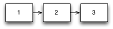
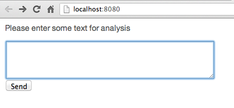
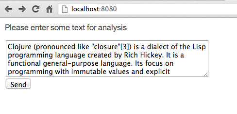
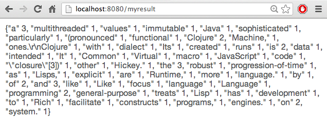
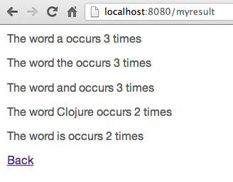
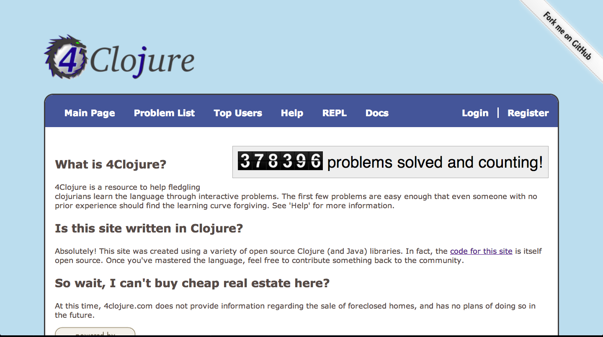
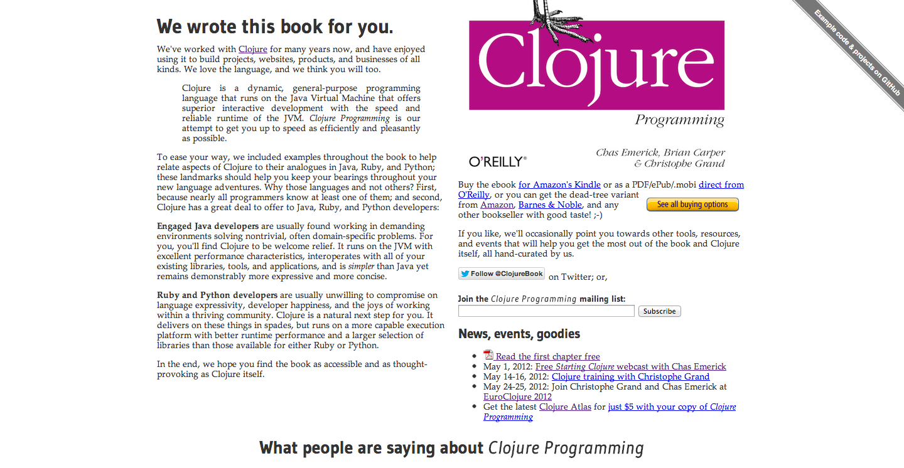
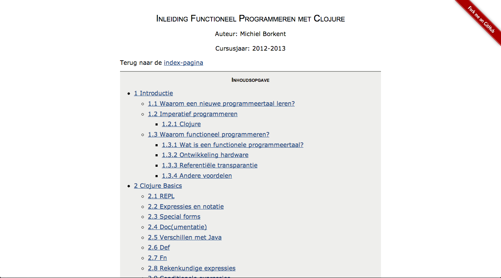

The Immutable Stack
04-10-2014
Martin van Amersfoorth
Michiel Borkent

Presenter Notes
Schedule
- Intro (10 m.)
- Clojure crashcourse (20 m.)
- Web server (10+20 m.)
- Web client (10+20 m.)
- Database (10+20 m.)
Presenter Notes
The Immutable Stack
- Clojure
- Clojurescript
- Web techologies Ring, Compojure, Liberator React
- Datomic
Presenter Notes
Waarom vind ik FP interessant?
- hoger abstractieniveau, elegantie, meer 'declaratief'
- meer doen met minder code
- concurrency/parallellisme
- nieuwsgierig: hoe los je iets op in verschillende paradigma’s?
Presenter Notes
Wat is Clojure?
- Relatief jonge programmeertaal: 2007.
- Ontworpen door Rich Hickey
- Gebaseerd op een van de oudste programmeertalen: Lisp (1958)
- Ontworpen om te draaien op bestaande hostomgevingen: JVM, CLR, Javascript-engines
Presenter Notes
Wat is Clojure?
- Keep it Simple: 'low profile architecture'
- Clojure is een dynamische getypeerde functionele programmeertaal
- Combineert een boel invloeden van andere programmeertalen
Presenter Notes
Eigen ervaring met FP/Lisp/Clojure
- Eerste programmeervak van mijn opleiding was in Miranda, voorloper van Haskell
- Afstudeeropdrachten op het gebied van muzikale data en functioneel programmeren (Common Lisp)
- Vanaf 2009: Clojure hobbymatig
- In 2011 HBO-studenten onderzoek laten doen naar verschillen software ontwikkelen in Clojure vs OO
- In 2012 een cursus ‘Functioneel Programmeren in Clojure’ ontwikkeld, loopt voor de derde keer (zie: http://michielborkent.nl/clojurecursus)
- Vanaf 2013 bij Finalist commercieel project met Clojure en Datomic
Presenter Notes
Wat is functioneel programmeren?
- Pure functies
- Hogere orde functies
- Immutability/persistente datastructuren
- Lazyness
Korte uitleg van deze begrippen aan de hand van Clojure.
Eerst: hoe kun je de voorbeelden uit deze sheets zelf uitproberen?
Presenter Notes
REPL
- Interactieve manier van ontwikkelen
- REPL: Read Eval Print Loop
1 user=> <- prompt
Presenter Notes
REPL
- Interactieve manier van ontwikkelen
- REPL: Read Eval Print Loop
1 user=> (inc 1) <- expressie 2 2 <- resultaat
Presenter Notes
REPL
- Interactieve manier van ontwikkelen
- REPL: Read Eval Print Loop
1 user=> (println "hello world") <- expressie 2 hello world <- side effect 3 nil <- resultaat
Presenter Notes
Ontwikkelomgevingen
- Voor Eclipse-gebruikers: CounterClockwise plugin: https://code.google.com/p/counterclockwise/
- CCW is verreweg de beste en meest actief ontwikkelde plugin vergeleken met andere IDES+plugins
- Mocht je een extra uitdaging willen: Emacs + nrepl.el
- Recent ook voor Intellij: cursive clojure plugin
Presenter Notes
CounterClockwise
- Biedt per Clojure-project een REPL in Eclipse
- Biedt Leiningen ondersteuning
- Leiningen is Maven met een Clojure-schil eromheen (+ veel meer)
- Nieuw Clojure project
Presenter Notes
CounterClockwise
- Inhoud
project.clj, vergelijkbaar metpom.xmlvan Maven, maar dan Clojure-notatie ipv XML - Clojure is zelf gewoon een dependency.
- Versie is dus per project
makkelijk in te stellen.
1 (defproject gastcollege "0.1.0-SNAPSHOT" 2 :description "FIXME: write description" 3 :url "http://example.com/FIXME" 4 :license {:name "Eclipse Public License" 5 :url "http://www.eclipse.org/legal/epl-v10.html"} 6 :dependencies [[org.clojure/clojure "1.5.1"]])
Presenter Notes
REPL starten voor project
Run as Clojure application

Presenter Notes
Functieaanroep
1 (inc 1)
in plaats van:
1 inc(1)
Dit noem je ook wel prefix-notatie.
Presenter Notes
If-expressie
1 (if (< (rand-int 10) 5)
2 "Getal kleiner dan 5"
3 "Getal groter dan of gelijk aan 5")
Presenter Notes
Let
1 (let [x (+ 1 2 3)
2 y (+ 4 5 6)
3 z (+ x y)]
4 z) ;;=> 21
Presenter Notes
Terug naar wat is FP?
Imperatief programmeren
Place oriented programming

Presenter Notes
Terug naar wat is FP?
Functioneel programmeren
Value oriented programming

Presenter Notes
Pure functies
Conceptueel zoals wiskundige functie:
- gegarandeerd dezelfde output bij dezelfde input
- een functie-aanroep kan dus altijd vervangen worden door zijn uitkomst
- geen (serieuze) side effects (IO, mutatie van objecten, etc)
Presenter Notes
Pure functies
De meeste functies in Clojure zijn puur.
1 (inc 10) ;;=> 11
2 (inc 11) ;;=> 12
3 (count "foo") ;;=> 3
4 (count "dude") ;;=> 4
5 (str "foo" "bar") ;;=> "foobar"
Presenter Notes
Pure functies
Niet-pure functies zijn echter gewoon mogelijk (i.t.t. Haskell)
1 (rand-int 10) ;;=> 7
2 (rand-int 10) ;;=> 0
3 (time (inc 1)) ;;=>
4 "Elapsed time: 0.022 msecs" <- side effect
5 2 <- resultaat
6 user=> (time (inc 1))
7 "Elapsed time: 0.024 msecs" <- side effect
8 2 <- resultaat
- Waarom zijn
rand-intentimeniet puur? - NB:
timeis een speciaal soort functie, nl. een macro
Presenter Notes
Pure functies
- Makkelijker testbaar
- Geen afhankelijkheid van globale state (bv attributen van een klasse of object)
- Dus makkelijker lokaal uit te proberen (REPL) en over te redeneren
- Veel aanroepen van pure functies zijn makkelijker te parallelliseren, omdat ze onafhankelijk van elkaar kunnen draaien
- Compiler kan optimaliseren (Haskell, C, …)
- Clojure gebruikt puurheid van functies in combinatie met concurrency-mechanismen (atoms, refs, ...)
Presenter Notes
Voorbeeld atom + pure functies
1 (def game-state (atom {:score 0}))
2
3 (defn increase-score [old-state points]
4 (update-in old-state [:score] + points))
5
6 ;; test:
7 (increase-score {:score 40} 20) ;;=> {:score 60}
8
9 (defn score! []
10 (swap! game-state increase-score 20))
11
12 @game-state ;;=> {:score 0}
13 (score!)
14 @game-state ;;=> {:score 20}
15 (score!)
16 @game-state ;;=> {:score 40}
Presenter Notes
Voorbeeld parallellisatie
1 (defn reverse-str [s]
2 (apply str
3 (reverse s)))
4
5 (reverse-str "foo") ;;=> "oof"
Sequentieel
1 (map reverse-str ["foo" "bar" "baz"])
2 ;;=> ("oof" "rab" "zab")
Parallel (1 letter verschil)
1 (pmap reverse-str ["foo" "bar" "baz"])
2 ;;=> ("oof" "rab" "zab")
Presenter Notes
Hogere orde functie
- Functie die een of meer functies als invoer heeft
- Of: functie die een andere functie oplevert (komen we vandaag niet aan toe)
Presenter Notes
Hogere orde functie: map
1 (map inc [1 2 3]) ;;=> (2 3 4)
- Invoer-functie is hier
inc - Past invoerfunctie toe op elk element in een collectie.
- Levert een nieuwe collectie op.
Presenter Notes
Hogere orde functie: filter
1 (odd? 1) ;;=> true
2 (odd? 2) ;;=> false
3 (range 10) ;;=> (0 1 2 3 4 5 6 7 8 9)
4 (filter odd? (range 10)) ;;=> (1 3 5 7 9)
- Invoer-functie is hier
odd? - filtert de elementen uit een collectie waarvoor functie 'logisch
waar' oplevert
(In Clojure is alles behalve
nilenfalselogisch waar)
Presenter Notes
Hogere orde functie: reduce
1 (reduce + [1 2 3 4 5]) ;;=> 15
Stappen:
1 (reduce + [1 2 3 4 5])
2 (+ 1 2) ;;=> 3
3 (reduce + [3 3 4 5])
4 (+ 3 3 ) ;;=> 6
5 (reduce + [6 4 5])
6 (+ 6 4) ;;=> 10
7 (reduce + [10 5])
8 (+ 10 5) ;;=> 15
9 15
Presenter Notes
Hogere orde functie: reduce
Veel functies gebruiken intern reduce, waardoor ze zijn aan te
roepen met een variabel aantal argumenten:
1 (+ 1 2 3 4 5) ;;=> 15
Presenter Notes
Hogere orde functie: reduce
Complexere functie: frequencies:
1 (frequencies ["foo" "bar" "bar" "foo" "baz"])
2 ;;=> {"foo" 2, "bar" 2, "baz" 1}
- Hoe zou je dit kunnen aanpakken met
reduce? - We zullen dit voorbeeld zometeen gaan uitwerken, eerst kennis nodig van hashmaps in Clojure
Presenter Notes
Persistente datastructuren
- een instantie van een datastructuur wijzigt niet meer na constructie
- een nieuwe instantie kan gebaseerd worden op de structuur van een oudere instantie
Presenter Notes
Lijsten (immutable)
1 (def l1 (list 1 2 3))
2 (def l2 (conj l1 0))
3 l2 ;;=> (0 1 2 3)
Structural sharing:


Presenter Notes
Vectoren (immutable)
1 (def v [1 2 3])
2 (rest v) ;;=> (2 3)
3 (conj v 4) ;;=> [1 2 3 4]
4 (pop v) ;;=> [1 2]
5 (assoc v 0 10) ;;=> [10 3 4]
6 (subvec v 1 2) ;;=> [2]
Je kunt vectoren niet wijzigen. Wel nieuwe maken op basis van oude.
Presenter Notes
Hashmaps (immutable)
1 (def m {:a "foo", :b "bar"})
2 (get m :a) ;;=> "foo"
3 (get m :c) ;;=> nil
4 (get m :c :not-found) ;;=> :not-found
5 (assoc m :c "baz") ;;=> {:a "foo", :c "baz", :b "bar"}
Presenter Notes
Hashmaps (immutable)
1 ({:a "foo" :b "bar"} :a) ;;=> "foo"
2
3 (:b {:a "foo" :b "bar"}) ;;=> "bar"
- maps zijn functies van keywords
- keys zijn functies van maps
Presenter Notes
Voordelen persistente datastructuren
- Vanwege immutabiliteit voorkom je veel lastige concurrency-situaties: niet hoeven nadenken over locking
- Zijn erg efficiënt vanwege structural sharing (geen duplicering van overlappende structuur)
- Vrij te delen met andere softwaremodules zonder ernstige dependencies te creeëren: geen DTOs of object-clones nodig zoals in Java
Presenter Notes
Hogere orde functie: reduce
We weten nu alle ingrediënten om zelf frequencies te kunnen
programmeren...
1 (frequencies ["foo" "bar" "bar" "foo" "baz"])
2 ;;=> {"foo" 2, "bar" 2, "baz" 1}
- Hoe zou je dit kunnen aanpakken met
reduce? - Stap 1: maak een functie van 2 argumenten welke 1 stap van de iteratie kan berekenen en test de functie
- Stap 2: toepassen met
reduce
Presenter Notes
Eerst even imperatief (Python)
1 def frequencies(coll):
2 result = {}
3 for elt in coll:
4 if elt in result:
5 result[elt] += 1
6 else:
7 result[elt] = 1
8 return result
9
10 frequencies(["foo","bar","foo", "bar","baz"])
11 => {'bar': 2, 'baz': 1, 'foo': 2}
Presenter Notes
Stap 1
Maak een functie f zodat:
1 (f {} "foo") ;;=> {"foo" 1}
2 (f {"foo" 1} "foo") ;;=> {"foo" 2}
3 (f {"foo" 1 "bar" 1} "foo") ;;=> {"foo" 2 "bar" 1}
4 (f {"foo" 1} "bar") ;;=> {"foo" 1, "bar" 1}
5
6 (defn f [m e]
7 ...)
Presenter Notes
Testen definiëren in Clojure
1 (use 'clojure.test)
2 (declare f) ;; f bestaat nog niet
3 (deftest test-f
4 (is (= (f {} "foo") {"foo" 1}))
5 (is (= (f {"foo" 1} "foo") {"foo" 2}))
6 (is (= (f {"foo" 1 "bar" 1} "foo") {"foo" 2 "bar" 1}))
7 (is (= (f {"foo" 1} "bar") {"foo" 1, "bar" 1})))
8
9 (run-tests)
10 Ran 1 tests containing 4 assertions.
11 0 failures, 4 errors.
12 {:type :summary, :pass 0, :test 1, :error 4, :fail 0}
4 errors, want f is nog niet gedefiniëerd
Presenter Notes
Stap 1
Maak een functie f zodat:
1 (f {} "foo") ;;=> {"foo" 1}
2
3 (defn f [m e]
4 (if (= m {}) {e 1}))
5
6 (run-tests)
7
8 ...
Presenter Notes
Stap 1
1 Testing user
2
3 FAIL in (test-f) (NO_SOURCE_FILE:3)
4 expected: (= (f {"foo" 1} "foo") {"foo" 2})
5 actual: (not (= nil {"foo" 2}))
6
7 FAIL in (test-f) (NO_SOURCE_FILE:4)
8 expected: (= (f {"foo" 1, "bar" 1} "foo") {"foo" 2, "bar" 1})
9 actual: (not (= nil {"foo" 2, "bar" 1}))
10
11 FAIL in (test-f) (NO_SOURCE_FILE:5)
12 expected: (= (f {"foo" 1} "bar") {"foo" 1, "bar" 1})
13 actual: (not (= nil {"foo" 1, "bar" 1}))
14
15 Ran 1 tests containing 4 assertions.
16 3 failures, 0 errors.
17 {:type :summary, :pass 1, :test 1, :error 0, :fail 3}
Presenter Notes
Stap 1
Maak een functie f zodat:
1 (is (= (f {"foo" 1} "foo") {"foo" 2}))
2
3 (contains? {:a 1 :b 2} :a) ;;=> true
4 (contains? {:a 1 :b 2} :c) ;;=> false
5
6 (defn f [m e]
7 (if (= m {}) {e 1}
8 (if (contains? m e)
9 (assoc m e (inc (m e))))))
10
11 (run-tests)
12 ...
Presenter Notes
Stap 1
1 Testing user
2
3 FAIL in (test-f) (NO_SOURCE_FILE:5)
4 expected: (= (f {"foo" 1} "bar") {"foo" 1, "bar" 1})
5 actual: (not (= nil {"foo" 1, "bar" 1}))
6
7 Ran 1 tests containing 4 assertions.
8 1 failures, 0 errors.
9 {:type :summary, :pass 3, :test 1, :error 0, :fail 1}
NB, de case
1 (is (= (f {"foo" 1 "bar" 1} "foo") {"foo" 2 "bar" 1}))
slaagt ook al.
Presenter Notes
Stap 1
1 (defn f [m e]
2 (if (= m {}) {e 1}
3 (if (contains? m e)
4 (assoc m e (inc (m e)))
5 (assoc m e 1))))
6
7 (run-tests)
8
9 Testing user
10
11 Ran 1 tests containing 4 assertions.
12 0 failures, 0 errors.
13 {:type :summary, :pass 4, :test 1, :error 0, :fail 0}
Het werkt! Nog niet helemaal 'idiomatic'. Zometeen refactoren. Nu eerst even stap 2.
Presenter Notes
Stap 2
1 user=> (reduce f ["foo" "bar" "bar" "foo" "baz"])
2 IllegalArgumentException contains? not supported on type:
3 java.lang.String clojure.lang.RT.contains (RT.java:724)
Dit klopt. Functie f verwacht een map en een element (string).
Presenter Notes
Stap 2
1 (reduce f {} ["foo" "bar" "bar" "foo" "baz"])
2 ;;=> {"baz" 1, "bar" 2, "foo" 2}
Zelfde als:
1 (reduce f [{} "foo" "bar" "bar" "foo" "baz"])
Stappen:
1 (f {} "foo") ;;=> {"foo" 1}
2 (f {"foo" 1} "bar") ;;=> {"foo" 1 "bar" 1}
3 (f {"foo" 1 "bar" 1} "bar") ;;=> {"foo" 1 "bar" 2}
4 (f {"foo" 1 "bar" 2} "foo") ;;=> {"foo" 2 "bar" 2}
5 (f {"foo" 2 "bar" 2} "baz") ;;=> {"baz" 1, "bar" 2, "foo" 2}
Presenter Notes
Stap 2
De functie frequencies:
1 (defn f [m e]
2 (if (= m {}) {e 1}
3 (if (contains? m e)
4 (assoc m e (inc (m e)))
5 (assoc m e 1))))
6
7 (defn frequencies [coll]
8 (reduce f {} coll))
Presenter Notes
Stap 2
De functie frequencies:
1 (defn- f [m e] ;; private function
2 (if (= m {}) {e 1}
3 (if (contains? m e)
4 (assoc m e (inc (m e)))
5 (assoc m e 1))))
6
7 (defn frequencies [coll]
8 (reduce f {} coll))
Presenter Notes
Stap 2
De functie frequencies:
1 (defn frequencies [coll]
2 (let [reducefn (fn [m e] ;; local function
3 (if (= m {}) {e 1}
4 (if (contains? m e)
5 (assoc m e (inc (m e)))
6 (assoc m e 1))))]
7 (reduce reducefn {} coll)))
Presenter Notes
Stap 2
De functie frequencies:
1 (defn frequencies [coll]
2 (reduce (fn [m e] ;; anonymous function
3 (if (= m {}) {e 1}
4 (if (contains? m e)
5 (assoc m e (inc (m e)))
6 (assoc m e 1))))
7 {} coll))
De reduce-functie kan mooier/korter. Overbodige case, wie ziet 'em?
Presenter Notes
assoc
Indien lege map meegegeven:
1 (= m {}) {e 1}
Indien niet lege map en key zat nog niet in de map:
1 (assoc {"foo" 1} "bar" 1) ;;=> {"foo" 1 "bar" 1}
Maar:
1 (assoc {} "foo" 1) ;;=> {"foo" 1}
Dus 'special case' is onnodig.
Presenter Notes
Stap 2
1 (defn frequencies [coll]
2 (reduce (fn [m e]
3 (if (contains? m e)
4 (assoc m e (inc (m e)))
5 (assoc m e 1)))
6 {} coll))
De reduce-functie kan nóg mooier/korter. Wie heeft een suggestie?
Presenter Notes
Map lookup met default waarde
1 (def m {"foo" 1 "bar" 2})
2 (m "foo") ;;=> 1
3 (m "bar") ;;=> 2
4 (m "baz") ;;=> nil
5 (m "baz" :not-found) ;;=> :not-found
6 (m "baz" 0) ;;=> 0
Presenter Notes
Stap 2
1 (defn frequencies [coll]
2 (reduce (fn [m e]
3 (assoc m e (inc (m e 0))))
4 {} coll))
Presenter Notes
Functioneel vs imperatief
1 (defn frequencies [coll]
2 (reduce (fn [m e]
3 (assoc m e (inc (m e 0))))
4 {} coll))
vs
1 def frequencies(coll):
2 result = {}
3 for elt in coll:
4 if elt in result:
5 result[elt] += 1
6 else:
7 result[elt] = 1
8 return result
Presenter Notes
frequencies in clojure.core:
1 (defn frequencies
2 "Returns a map from distinct items in coll to the number of times
3 they appear."
4 {:added "1.2"
5 :static true}
6 [coll]
7 (persistent!
8 (reduce (fn [counts x]
9 (assoc! counts x (inc (get counts x 0))))
10 (transient {}) coll)))
Transients optimalisatie, algoritme is hetzelfde.
Presenter Notes
Webapplicatie woorden tellen
In Eclipse:
- New Clojure project genaamd
freqweb - Template: compojure-app (zie https://github.com/yogthos/compojure-template)
- Open source file
freqweb.repl.clj - In Clojure-menu: Load file in REPL (Ctrl-Alt-L of Cmd-Alt-L)
- In REPL:
(start-server) - Browser opent zich met 'Hello World'
Presenter Notes
Textarea toevoegen
In freqweb.routes.home.clj
1 (ns freqweb.routes.home
2 (:require [compojure.core :refer :all]
3 [freqweb.views.layout :as layout])
4 (:use [hiccup.form])) ;; <-
Presenter Notes
Textarea toevoegen
In freqweb.routes.home.clj
1 (defn home []
2 (layout/common
3 [:div
4 [:p "Please enter some text for analysis"]
5 (form-to [:post "/myresult"]
6 (text-area {:rows "4" :cols "50"} "mytext")
7 [:br]
8 (submit-button "Send"))]))
Presenter Notes
De eerste pagina

Presenter Notes
Afhandeling POST
1 (defn myresult [text]
2 (let [words (clojure.string/split text #" ")
3 freqs (frequencies words)]
4 (layout/common [:p (str freqs)])))
5
6 (defroutes home-routes
7 (GET "/" [] (home))
8 (POST "/myresult" [mytext] (myresult mytext)))
Presenter Notes
Tekst invullen

Presenter Notes
Resultaat (ruwe data)

Verbetering?
Hoe tonen we bijvoorbeeld de top 5 resultaten in een mooie tabel?
Presenter Notes
Sorteren van collecties
Bijvoorbeeld sorteren op lengte van strings
1 (sort (fn [a b] (< (count a) (count b)))
2 ["dog" "elephant" "bird"])
3 ;;=> ("dog" "bird" "elephant")
4 (sort-by count < ["dog" "elephant" "bird"])
5 ;;=> ("dog" "bird" "elephant")
(Vraag: is sort een hogere orde functie?)
Presenter Notes
Map als collectie sorteren
1 (def m {"foo" 1 "bar" 2 "baz" 4 "qux" 3})
2 (seq m) ;;=> (["foo" 1] ["bar" 2] ["qux" 3] ["baz" 4])
3 (sort (fn [a b] (> (second a) (second b))) m)
4 ;;=> (["baz" 4] ["qux" 3] ["bar" 2] ["foo" 1])
5 (sort-by second > m)
6 ;;=> (["baz" 4] ["qux" 3] ["bar" 2] ["foo" 1])
7 (take 2 (sort-by second > m)) ;;=> (["baz" 4] ["qux" 3])
Presenter Notes
Top 5 van frequentietabel
1 (defn select-top-5 [freqs]
2 (take 5 (sort-by second > freqs)))
Presenter Notes
Nieuwe resultaatpagina
1 (defn myresult [text]
2 (let [words (clojure.string/split text #" ")
3 freqs (frequencies words)
4 top5 (select-top-5 freqs)]
5 (layout/common [:p (for [[word amount] top5]
6 [:p "The word " word
7 " occurs " amount " times"])]
8 [:a {:href "/"} "Back"])))
Presenter Notes
Nieuwe resultaatpagina

Presenter Notes
Meer leren
 x
Presenter Notes
Meer leren

Presenter Notes
Meer leren
http://michielborkent.nl/clojurecursus

Presenter Notes
Einde
Bedankt voor jullie aandacht!
Vragen?
- Twitter: @borkdude
- Homepagina: http://michielborkent.nl